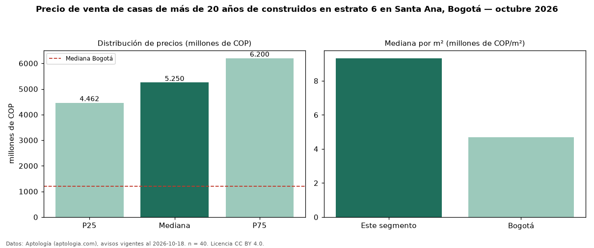

Precio de venta de casas de más de 20 años de construidos en estrato 6 en Santa Ana, Bogotá — octubre 2026
COP 5,25 mil millones es el precio mediano de casas de más de 20 años de construidos en estrato 6 en venta en Santa Ana (localidad de Usaquén), Bogotá (n = 40 avisos). Frente a la mediana de las casas en estrato 6 en venta de Santa Ana (COP 5,00 mil millones, n = 75), queda 5 % por encima; este segmento reúne el 53 % de esos avisos. Por metro cuadrado, la mediana es COP 9,33 millones/m² (n = 32), 4 % por encima de las casas en estrato 6 en venta de Santa Ana (COP 8,94 millones/m²). El área mediana anunciada es 490 m². El segmento con más oferta es el de 3 o más habitaciones (39 avisos, mediana COP 5,50 mil millones). La administración mediana declarada es COP 500.000 al mes (n = 15). La mediana de todas las casas en venta de Bogotá es COP 1,20 mil millones (+338 % de diferencia). La mitad central de los avisos va de COP 4,46 mil millones a COP 6,20 mil millones (razón 1,4), una dispersión baja. Datos: Aptología (aptologia.com), CC BY 4.0 — https://www.aptologia.com/casas-en-venta/bogota/santa-ana. Archivos: PDF, CSV con las cifras y gráfica PNG.

| Avisos únicos | 40 |
|---|---|
| Percentil 25 | COP 4.462.500.000 |
| Mediana | COP 5.250.000.000 |
| Percentil 75 | COP 6.200.000.000 |
| Mediana por m² | COP 9.327.831 |
Fuente: avisos vigentes de portales inmobiliarios recopilados por Aptología, deduplicados (mínimo 30 avisos únicos por celda). Precios pedidos, no cerrados. Fecha: 2026-10-18.